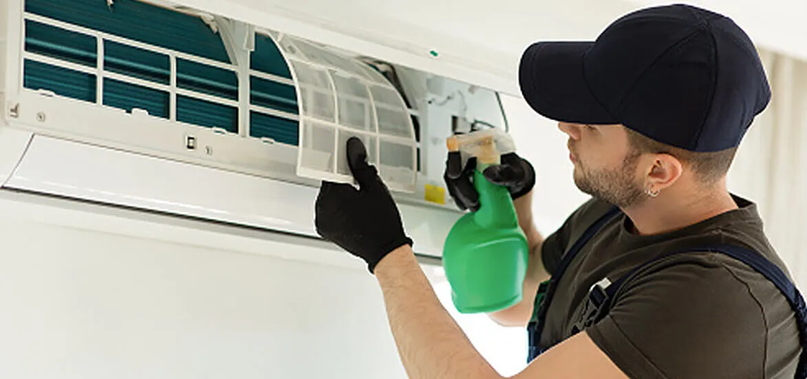

Should You Replace Your AC Filter Or Rather Just Decide To Clean It?

Has it been too long since you last checked your AC filters installed in your home to see if they needed some cleaning or if the filters needed to be replaced entirely with a new one? Keeping a close eye on your AC filter cleaning maintenance once in a while and deciding to clean or replace them is a decision you must make depending on the requirements. If you don't know what AC air filters are and their importance. Then, let us talk and understand it first.
What Are AC Air Filters And Their Importance In The HVAC System?
Like any other filters on the market, air filters installed in Air conditioners are a part of the HVAC system, which helps filter out the sizable foreign air particles that could contain harmful substances.
If they can penetrate the air filters and enter our indoor environment, inhaling that air could deteriorate the person's health and well-being. EZ Heat and Air services offer some top-class quality service needed to maintain the AC air filters installed in your HVAC system at your home. If you don't have an idea about the various Benefits of regular cleaning AC filter, then let’s go through them one by one:
Improves The Overall Life Of Your Air Conditioner
Plan maintenance of your air filters will help you avoid having a dirty air conditioner that circulates harmful air containing large foreign particles. That also enhances the overall life of the HVAC unit by reducing wear and tear.
More Energy Efficient
Having clean air filters in your air conditioner by adequately cleaning them will let you save the extra utility bill consumed by the dirty circulation of air through them.
Increase In Quality Of The Air
Cleaning your Air filters in air conditioners through proper maintenance will make the air inside your home a lot fresher and easier to breathe for your family than the previous air filtering out of the AC.
After knowing about the benefits of regular maintenance of the AC air filters in your home by availing of EZ heat and cooling services, let us look at the procedure on how to clean a reusable home air filter easily.
Washable or reusable air filters are famous for improving the overall air quality inside your home. Although they could be a little more expensive than disposable air filters, they provide a lot of longevity compared to other types of air filters on the market.
The Steps Involved In The Cleaning Of Reusable Home Air Filters
One of the first things you must remember is that the reusable air filters must be cleaned at least once a month for their proper function.
- Safely remove the air filter from the Air conditioner first.
- Clean and rinse it properly in a tub full of water.
- Gently apply brush and detergent over it to remove the dirt particles from inside.
- After completing the above steps, shake the excess water out and keep it alone for some time to dry.
- The last step would be reattaching the Air filter back in the air conditioner, and the last bit of drying would be completed automatically by switching back on the AC.
One of the common questions that could come to your mind regarding your AC filters on checking them out after a long time would be, can I clean my air filter instead of replacing it with a new one?
Cleaning the air filters of your air conditioner at home by requesting the services of EZ heat and air-cooling experts through proper maintenance will help you enjoy many benefits of it:-
Extends The Life Of The HVAC System
Most HVAC systems generally last for at least 15 to 20 years and could be expensive. So, conducting proper maintenance of the Air filter timely will let you use it for an extended period and save the cost of replacing it.
Avoiding Repairs
Overseeing repair of the air filter could cost you a lump sum of money, but if you decide to clean them properly from time to time, it lets you save that cost.
Suppose you decide that cleaning would not be the solution for your Air filter at home. Then EZ heat and air also provide the necessary hand you require to select and replace the air filters with the best type available in the market.
But before you decide which would be the best type of air filter for your air conditioner at home. Before determining the best air filter replacement time, let us consider which factors you need to keep in mind.
Most air filters last for at least three months, but their condition depends on many external factors influencing their lifespan. If you don't have an idea of which could be those, then let us have a quick look at them:-
- The total number of people living under the same roof.
- The health condition of all the family members.
- The number of pets and the type of breed you own.
- Condition of outdoor air quality
- Smoking indoors
- Faculty construction of the air filter.
Are you confused about the factors essential to know before you decide upon a new Air filter and replace the old one? No need to worry anymore! EZ Heat and Air experts also provide you with all the necessary details before buying one for your home.
Size Of The Air Filters
A wide variety of air filter sizes are available to buy from the market. But, accepting the wrong size of it could compromise the overall efficiency of the HVAC system and result in bad quality circulation into your home.
Type Of Air Filter
Customers can obtain many types of air filters ranging from different prices and materials from the market. But, choosing the right kind depending upon factors like low maintenance, low cost, and high productivity could save you a lot of money by replacing them frequently.
Air Filter Changing Schedule
Don't forget to ask the person you are buying the air filter from about the schedule and the air conditioner coil cleaner in San Diego you need to maintain for the proper functioning of the Air filter in your HVAC system. Each air filter has a unique schedule so try to match the program with yourself to avoid any problems later.
MERV Ratings
MERV ratings give you an idea about the efficiency of the air filter you choose to buy regarding their capability to remove the pollutants from the air inside your home. The higher the efficiency on the scale from 1 to 20, the better would be the quality of the air.
After knowing about the things, you must remember before buying the Air filter. Let us look at which would be the best type for your home depending on your budget and requirements: -
Fiberglass Air Filters
The fiberglass air filter will be the cheapest option if you don't have the required budget to buy other types of it. Due to their low price, they are not quite suitable for completely removing all the harmful substances and increasing the air quality inside.
HEPA Filters
HEPA or high-efficiency particulate air filters are considered one of the most cost-effective and efficient ones available in the market. They are known for removing 99.97% of air pollutants and adding a feeling of fresh air into your homes.
Pleated Air Filters
Popularly known in the market for having a large surface area, pleated air filters are a little expensive compared to other types of air filters but also provide the feature of recycling them, making them environmentally friendly
Washable Filters
Washable air filters are popular among the customer base due to their unique feature of reusability that lets you wash these air filters using some detergent and later on drying them, which removes all kinds of dirt that were present on them.
After buying the correct type of air filter, the last step and question that would come to your mind would be how to change the HVAC filter apartment using the proper procedure. For this, you should probably call for EZ heat and air services; they are specialized and trained in adequately attaching the air filter to the right place.
If you are not aware of the procedure, EZ heat and sir service will use to replace the air filter in your apartment. Then let us go through the steps which are mentioned below: -
- One of the first things they do is switch off the power to avoid any short circuit and electric shock.
- The cover from the air filter is then removed using proper tools.
- Then, they look for any specific instruction because different air filters are fitted in uniquely.
- The next step is removing the old filter and putting the new filter in its place.
- Covering them with a proper sheet is the last step they do to conclude the process.
After reading the above article on whether you should decide to replace your Air filter or clean it, hopefully, you know what you need to do. And if you want to know more about other services, then make sure you contact EZ Heat and Air for some premium quality assistance.